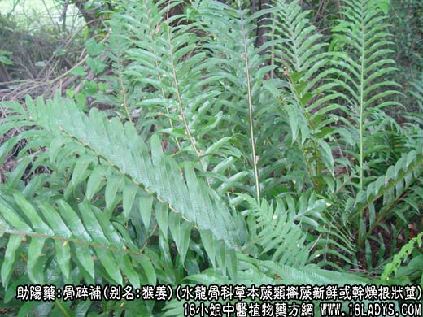
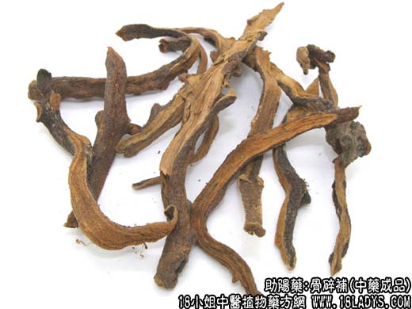
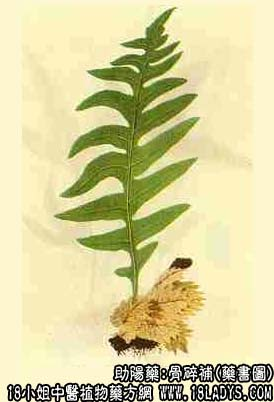

骨碎补为较常用中药。见于《开宝本草》。因能治折伤而补骨碎故名。根状茎密被棕褐色小鳞片，状似姜块，遂有猴姜之称。
别名：猴姜、申姜、毛姜。
来源：为水龙骨科多年生草本蕨类植物槲蕨及中华槲蕨的新鲜或干燥根状茎。附生于树干及岩石上。均匀野生。
1、槲蕨
产地：主产于广东、广西、浙江、湖北、福建、湖南、江西、四川、贵州、云南等地。
性状鉴别：呈扁平条形，多弯曲而有分枝，长短不一。长4~15厘米，宽1~1.5厘米，厚约2~4毫米。表面淡棕色至暗棕色，密被细小鳞片，柔软如毛，黄棕色。经过火燎者鳞片多已脱落，显棕褐色至暗褐色，两侧及上面具突起的圆疤状叶痕。质轻脆，易折断，断面可见多数黄色点状的维管束，排列成环。气微，味淡微涩。
以棕色，条肥大者为佳。
2、中华槲蕨
产地：主产于陕西、甘肃、青海、西藏等地。
性状鉴别：根状茎较直而细长，分枝少，长5~17厘米，宽0.6~1厘米。外表小鳞片黄棕色，易脱断，脱落后黄色至淡棕色。质硬，断面黄色。余同槲蕨。
功效与作用：补肾镇痛、活血壮筋。
炮制：沙烫、去毛、切咀。
性味：苦，温。
归经：入肝、肾经。
功能：补肝肾、续筋骨、活血止痛。
主治：腰膝筋骨酸痛，外伤瘀血作痛，肾虚久泻，耳鸣，牙痛。
临床应用：1、治肾虚牙痛、齿龈出血（牙周病等）。骨碎补有增强体质作用，可配牛车肾气丸同服。如齿肿红龈充血、疼痛、可用骨碎补配地骨皮、石斛各12g，甘草3g，水煎服。如有齿槽脓肿形成，甚至溢脓，则配玄参、露蜂房。
2、治跌打损伤，尤其肌肉、韧带扭伤和闭合性骨折，取其有活血镇痛作用，可配其他活血祛瘀药，方如接骨散，此药外敷能加速骨折愈合。此外，也可治肾虚久泻、耳鸣、足膝痿弱。
使用注意：由实火、血虚等所致的牙痛不宜用。
用量：3~9g，补肾大剂可用至30g。
处方举例：接骨散：骨碎补、血竭、硼砂、当归、乳香、没药、续断、自然铜、大黄、土鳖虫，各等分，共研细末，用凡士林调敷患部。
注：1、骨碎补：湖北、上海、浙江等地多鲜用。北京以干燥原药材切成1厘米咀者称申姜，沙烫去毛后，切成3厘米段者称骨碎补。天津则申姜、骨碎补通用。
2、骨碎补的植物来源不一，据《中药鉴别手册》记载，共有2科7种，药材性状基本相似，除正文所述为大多数地区习用外，水龙骨科近邻槲蕨、崖姜、光亮密网蕨及骨碎补科骨碎补，大叶骨碎补在不同地区匀作骨碎骨使用。